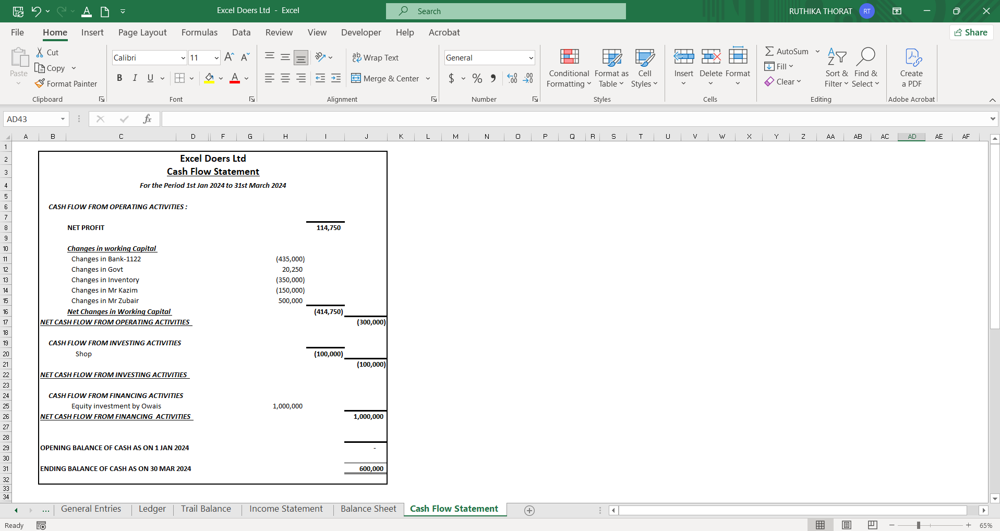
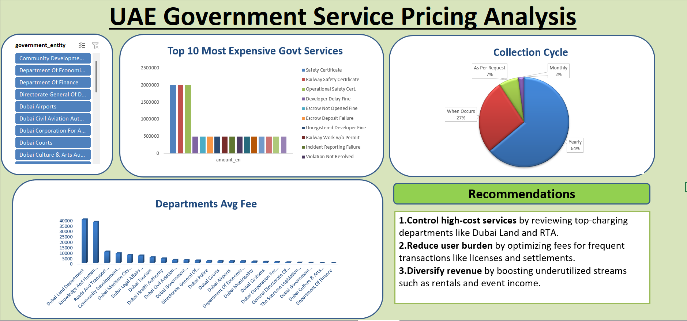
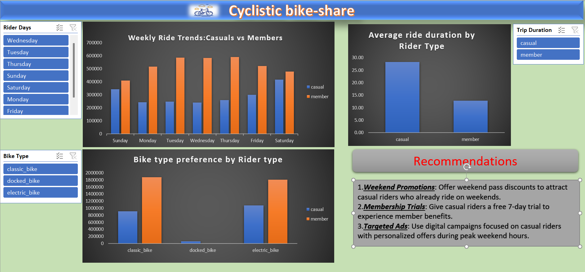
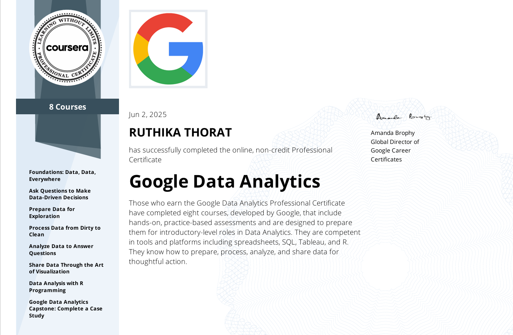

Dedicated to building clean, accurate accounting records, with expertise in Excel, journal entries, VAT reporting, and financial statements. Skilled in using Power BI for financial data analysis and insights. Currently preparing for the ACCA qualification and pursuing a career in accounting and bookkeeping in the UAE.
Built a full accounting system in Excel including Journal Entries, Balance Sheet, and Cash Flow Statement. This project was completed by following a guided tutorial to understand Excel automation in accounting.
📸 View Project Screenshots Analyzed and visualized government service pricing patterns, highlighting high-cost areas and collection frequency.
Analyzed 5M+ bike share trip records using Excel. Visualized trends by user type, ride duration, and weekday usage.
IFBI – Gained foundational knowledge in financial services and customer relationship management.
Coursera – Completed comprehensive coursework in data cleaning, visualization, SQL, R programming, and case studies.

📊 Power BI (Dashboards, Data Modeling)
📈 Excel (Pivot Tables, Charts, VLOOKUP)
🧹 Data Cleaning & Analysis
🏦 Financial Analysis & Reporting
🧾 Tally ERP9 (Basic), QuickBooks
💡 Banking & Customer Relationship Knowledge
📧 Email: ruthika1433@gmail.com
📍 Location: Dubai, UAE